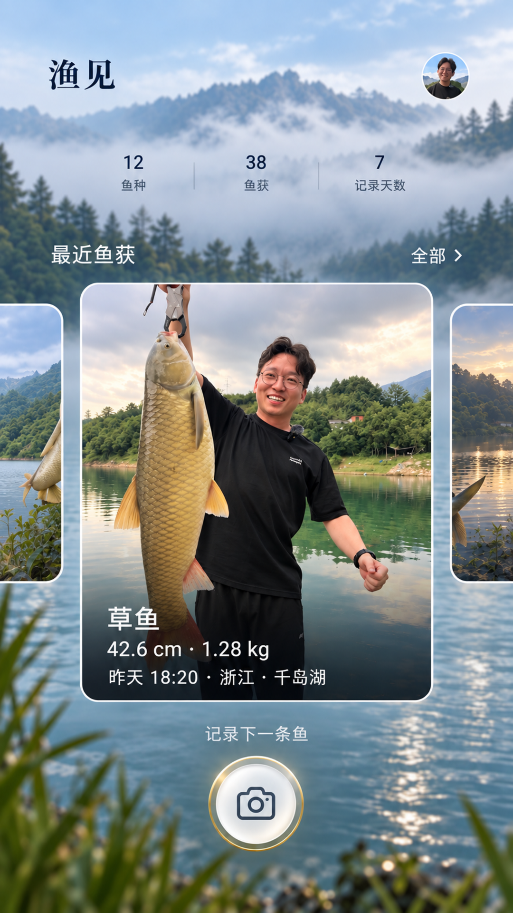

branch preview
结构化预览独立绘制文本、布局和注册资产。真实鱼获照片来源、头像 Authority、Figma 背景 Fill 与 Android Runtime 仍按证据状态显示。

原始文件不覆盖、不压缩；图片本身是唯一视觉参考。
主预览使用独立 HTML 层。缺失或争议资产显示明确占位状态，不把整页 PNG 或截图切块用作结构。
节点结构来自 PR #164 映射快照；未提供单节点 ID 的文本继续标记缺失，不补造节点。
仅展示 Android Emulator 原生截图、真实 bounds 与测试元数据。未执行或失败时保留准确状态。
同一 1080 × 1920 参考坐标；未取得 Android 原生截图时比较选项保持 NOT_RUN。
等待 exact-source Chromium 截图；本比较不会替代 Android Runtime 或视觉 Gate。
比较只在对应状态、坐标基准和同类 ROI 上执行。动态鱼获照片不纳入静态像素阈值。